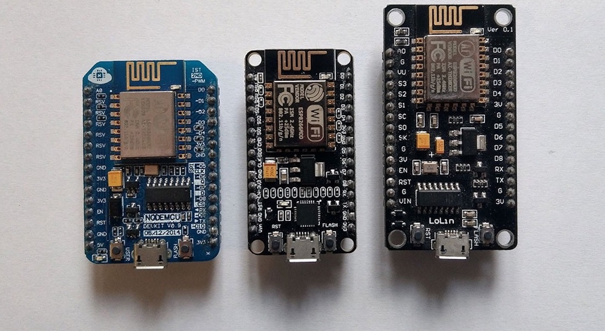
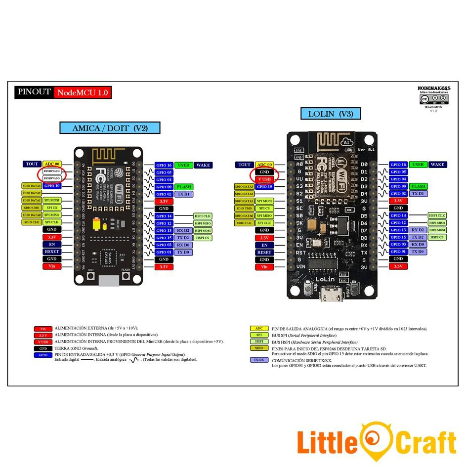

Forty
By HTML5 Up
Menu
Home
Adafruit Feather HUZZAH
LoLin NodeMcu
Arduino Uno
Raspberry Pi

LoLin NodeMcu
NodeMcu development board with ESP8266 WiFi microcontroller

Lolin Overview
Learn to program the LoLin NodeMcu
Learn more